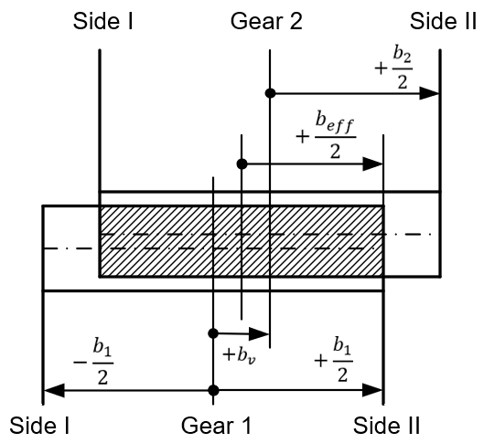

|
|
|


齿宽
通常齿宽不应大于法向模数的 10 至 20 倍，也不应大于小齿轮的分度圆。如果齿宽过大，接触区会恶化。轴向偏移 bv。单击齿宽输入字段右侧的加号按钮（另见图）。轴向偏移减小了强度计算的有效宽度。公共宽度用于计算压力。齿根强度计算中考虑一定的悬伸量。所选小齿轮宽度通常略大于齿轮宽度。

图 15.3：轴向偏移 bv
在人字齿轮* 中，您必须指定轮齿的总宽度（即两半的宽度加上中间间隙）。单击齿轮旋向下拉列表右侧的加号按钮，并输入间隙宽度 bn。
*人字齿轮是由两半齿轮组成的齿轮；第一半向左倾斜，第二半向右倾斜。
Facewidth
Normally the facewidth shouldn't be greater than 10 to 20 times the normal module, or also not greater than the reference circle of the pinion. The contact pattern deteriorates if the facewidth is too large. Axial offset bv. Click on the Plus button to the right of the facewidth input field (see also Figure). The axial offset reduces the effective width for the strength calculation. The common width is used to calculate the pressure. A certain amount of overhang is taken into account for the Tooth root strength. The selected pinion width is often somewhat greater than the gear width.
Figure 15.3: Axial offset bv
In double helical gears* you must specify the total width of the gear teeth (i.e. the width of both halves together with the gap). Click on the Plus button to the right of the toothing hand of gear drop-down list and enter the gap width bn.
*Double helical gears are gears that consist of two gear halves; the first half is angled to the left and the second half is angled to the right.